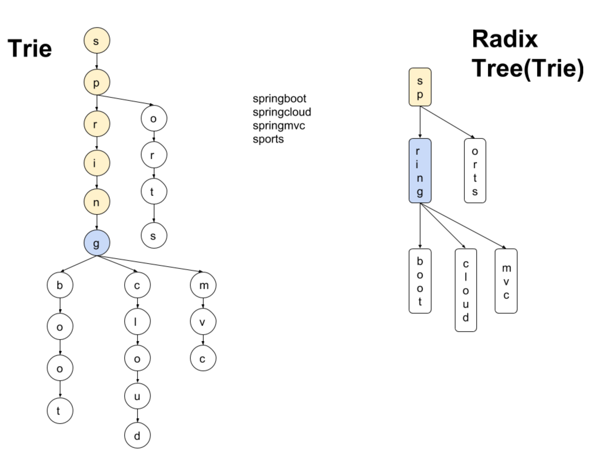

트라이
Trie 검색 트리의 일종
트라이는 문자열을 저장하고 효율적으로 탐색하기 위한 트리 형태의 자료구조이다. 트라이는 문자열의 접두사(Prefix)를 이용하여 트리를 구성하므로, 특히 문자열 검색에 있어 유용하다. 이는 흔히 볼 수 있는 자동완성 기능, 사전 검색에서 사용된다. 트라이는 Prefix Tree, Retieval Tree 라고도 불린다. Radix Tree는 일반적인 트라이의 메모리 효율성을 더 좋게 만든 자료구조이다.
트라이의 구성
- 각 노드는 문자를 저장하는데 사용되는 노드
- 루트 노드부터 시작하여 문자열을 표현
- 각 노드는 해당 노드까지의 문자열(prefix)를 나타내며, 단어의 끝을 표시하는 플래그를 가질 수 있음
- 자식 노드는 해당 문자 다음에 나타날 수 있는 문자를 저장하는 데 사용됨

트라이의 구현
with java
/*
트라이 노드
내부 자식(children)을 HashMap으로써 가짐
*/
static class TrieNode {
Map<Character, TrieNode> children;
boolean isWord;
int count;
public TrieNode() {
children = new HashMap<>();
isWord = false;
count = 0;
}
}
/*
트라이 클래스
트리를 구성하는 isert, 단어를 찾는 search로 구성
*/
static class Trie {
TrieNode root;
public Trie() {
root = new TrieNode();
}
public void insert(String word) {
TrieNode curr = root;
for (char c : word.toCharArray()) {
curr.children.putIfAbsent(c, new TrieNode());
curr = curr.children.get(c);
curr.count++;
}
curr.isWord = true;
}
public int search(String query) {
TrieNode curr = root;
int count = 0;
for (char c : query.toCharArray()) {
if (!curr.children.containsKey(c)) break;
curr = curr.children.get(c);
count++;
if (curr.count == 1) break;
}
return count;
}
}